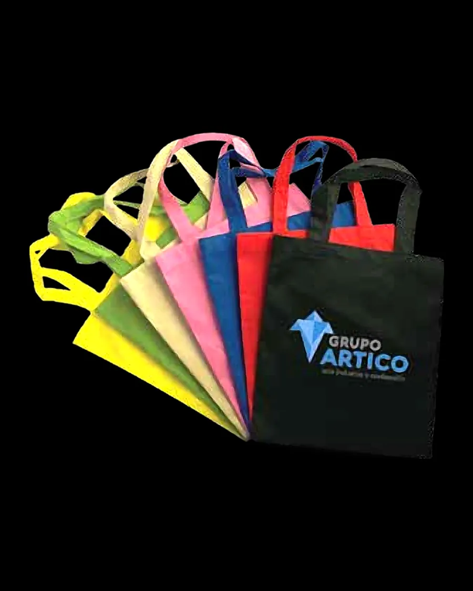
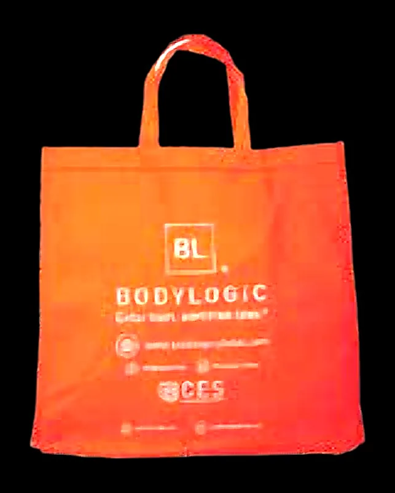
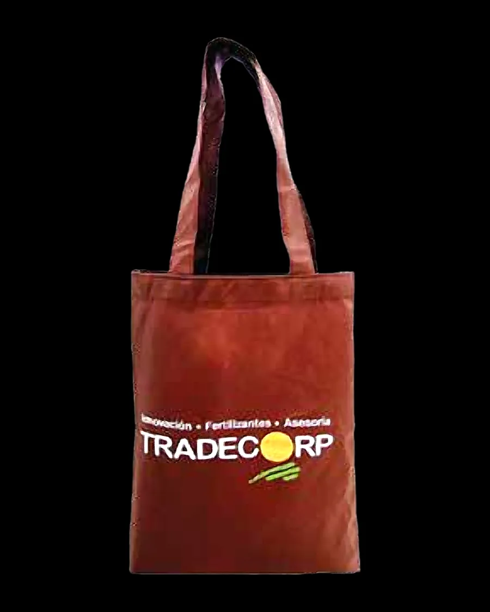

Catálogo · Reutilizable
Bolsa ecológica TNT personalizada con tu logo
Bolsa en tela no tejida (TNT / cambrel) con asas cosidas o termoselladas. Reutilizable, liviana y perfecta como regalo publicitario o bolsa de compra.
- 15×20 – 20×30 cmMedidas estándar
- 60 g · 70 g · 80 gGramaje
- 1 a 4 tintasImpresión
- 200 und.Mínimo de referencia



Usos ideales de la bolsa ecológica tnt
- Eventos, ferias y congresos
- Marcas y campañas
- Supermercados (reutilizable)
- Tiendas naturistas y agro
Material: Tela no tejida de polipropileno (60–80 g/m²).
Medidas disponibles
| Centímetros | Pulgadas | |
|---|---|---|
| 15 × 20 cm | 5.9 × 7.9″ | Probar → |
| 18 × 24 cm | 7.1 × 9.4″ | Probar → |
| 20 × 25 cm | 7.9 × 9.8″ | Probar → |
| 20 × 30 cm | 7.9 × 11.8″ | Probar → |
¿Necesitas una bolsa más grande o con fuelle? La cotizamos como medida especial.
Colores disponibles
Negro · Blanco · Rojo · Fucsia · Rosado · Azul rey · Verde · Verde limón · Amarillo · Naranja · Beige · Café · Morado. Impresión en tintas planas o full color según el tipo.
Bolsa ecológica TNT con entrega en el Eje Cafetero
Entregamos bolsa ecológica tnt en todo el Quindío y despachamos a Risaralda, Caldas, el Valle del Cauca, el Tolima y toda Colombia.
Preguntas frecuentes
01¿Cuál es el pedido mínimo de bolsa ecológica tnt?
Como referencia, desde 200 unidades. El mínimo exacto depende de la medida, el calibre y la impresión; escríbenos y te lo confirmamos.
02¿Qué medidas de bolsa ecológica tnt fabrican?
Manejamos 15×20 cm, 18×24 cm, 20×25 cm, 20×30 cm. Si necesitas una bolsa más grande o con fuelle, la cotizamos como medida especial.
03¿Me muestran un boceto antes de producir?
Sí. Antes de producir te enviamos un boceto digital con medidas, colores y ubicación del logo para tu aprobación. No producimos nada sin tu visto bueno.
04¿Sus bolsas cumplen la Ley 2232 de 2022?
Desde el 7 de julio de 2024 la Ley 2232 de 2022 prohíbe varias bolsas plásticas de un solo uso, como las de punto de pago, con excepciones como las bolsas reutilizables y algunas para alimentos. Te asesoramos para elegir la opción adecuada para tu negocio: manija flexible de calibre alto, TNT, papel o bolsas para alimentos. Esta información es orientativa.
Otros tipos de bolsa
Cotiza tu bolsa ecológica tnt
Súbenos tu logo, elige medida y cantidad, y recibe tu cotización con boceto.